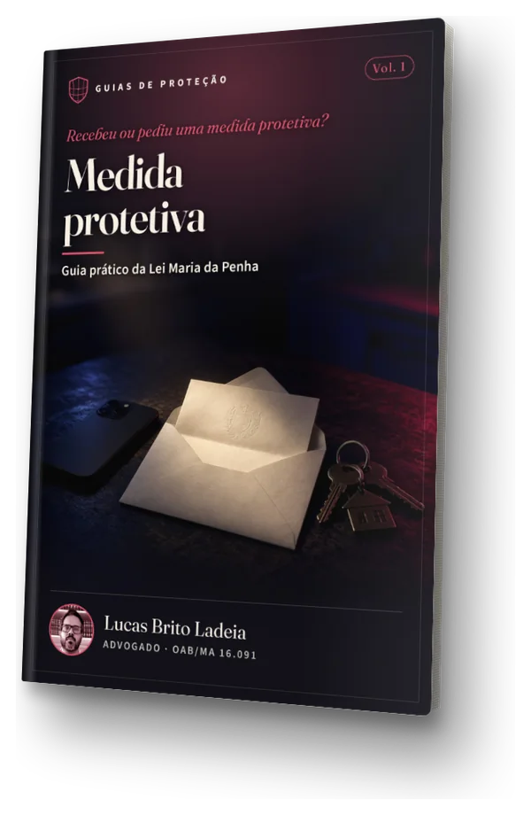

Lei Maria da Penha
Medida protetiva: guia prático da Lei Maria da Penha
Guia sobre a medida protetiva de urgência da Lei 11.340/2006. Obra completa, organizada em volumes.
O que você encontra no material
- O que é a medida protetiva de urgência da Lei 11.340/2006
- Quem pode pedir e como o pedido é feito
- Quais medidas a lei prevê e o que cada uma significa
- O que acontece quando uma medida é descumprida
R$ 69,50Pagar com Pix ou cartão
Pagamento via Mercado Pago. Após a confirmação, o PDF é enviado ao e-mail informado na compra.